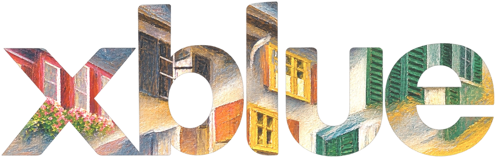

A hardware description language in Lean 4
The AI-native language for hardware
An AI agent writes small atomic rules and schedules them by hand. It verifies the circuit in XBlue, then optimizes it in VBlue, which is equivalent to XBlue, and VBlue emits plain SystemVerilog.
XBlue ≡ VBlue → SystemVerilog
Prefer to write the rules yourself? Write them, and ask the agent to schedule them for you.
-- A 4-bit counter. Two rules write `count`; the schedule orders them.xblue module mkCounter; input Bool reset; input Bool enable; Reg#(Bit#(4)) count <- mkReg(0); Bool full = count == 15; method Bit#(4) io_count = count; method Bool io_full = full; -- fires when its guard holds: enabled and not yet full rule tick (enable && !full); count <= count + 1; endrule rule clear (reset); count <= 0; endrule -- `≫` chains: clear sees tick's write and overrides it, so reset wins schedule tick ≫ clear;endmodulemodule mkCounter_rules_core ( input wire clk, input wire rst, input wire reset, input wire enable, output wire [3:0] io_count, output wire io_full); logic [3:0] count; wire [3:0] io_count_init; wire io_full_init; wire _t0; wire [3:0] _t1; wire _t2; wire _t3; wire [3:0] _t4; wire _t5; wire [3:0] _t6; assign io_count_init = 4'h0; assign io_full_init = 1'h0; assign _t0 = 1'h1; assign _t1 = (_t0 ? count : io_count_init); assign _t2 = (_t0 ? (count == 4'hf) : io_full_init); assign _t3 = (enable & (~(count == 4'hf))); assign _t4 = (_t3 ? (count + 4'h1) : count); assign _t5 = reset; assign _t6 = (_t5 ? 4'h0 : _t4); assign io_count = _t1; assign io_full = _t2; always_ff @(posedge clk) begin if (rst) begin count <= 4'h0; end else begin count <= _t6; end endendmoduleHow it works
Verify in XBlue, optimize in VBlue, emit SystemVerilog
One design, two levels. The agent gets the behaviour right where it is easy to reason about, in rules and a schedule, and makes the circuit small and fast where the gates are visible, in VBlue. Each step down keeps the meaning.
- XBlueWrite and scheduleThe agent writes guarded atomic rules and orders them itself:
tick ≫ clearin sequence,enq ∥ deqin parallel. No compiler picks the order. You can also write the rules yourself and ask the agent to schedule them. - XBlueVerify the circuitThe agent verifies the circuit: it proves the design's properties at the level of rules, against a cycle-level semantics. Lean checks every proof it writes.
- ≡lower
- VBlueOptimize the circuitThe design lowered to VBlue, a Lean model of synthesizable SystemVerilog. The agent rewrites it for area and timing, and each version must stay ≡ the lowered one.
- SystemVerilogShip itVBlue prints plain SystemVerilog: one assignment per value and one clocked block. No scheduling logic is added.
XBlue rules≡VBlue, lowered≡VBlue, optimized→SystemVerilog
Where the ≡ stands today. Proved in Lean: XBlue ≡ VBlue, i.e. every supported rule design is equivalent to the VBlue module it lowers to (lower_correct), and flattening a VBlue hierarchy keeps its meaning (flatten_sound). Checked on every emitted design: the subexpression sharing done when printing SystemVerilog, by a checker proved sound in Lean (hoistCheck_sound), so each emitted core is proved equivalent to its rule design. In progress: the equivalence of hand-optimized VBlue modules with the lowered ones (in the case study they are checked cycle by cycle in co-simulation).
Case study
A two-core RISC-V system, ported from Bluespec
CcNoc has two cores, MSI-coherent L1 caches, a shared L2 with a directory, a network-on-chip and main memory. The port keeps every rule of the original and matches the Bluespec compiler's Verilog cycle for cycle. It is then redesigned with a non-blocking L1 cache.
- 4.5M
- cycles of the whole system with every register equal to the Bluespec original
- 20%
- faster in Verilator than the Bluespec compiler's Verilog
- 29%
- shorter longest path in the core than Bluespec's, after hand optimization
- 12%
- fewer cells in the router than Bluespec's, after hand optimization
Learn it
From a counter to a non-blocking cache
The tutorial runs every lesson for you: the rules, the SystemVerilog they become, the gate count and a cycle-by-cycle simulation. Every exercise comes with its answer.